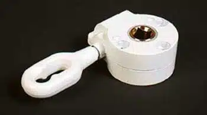
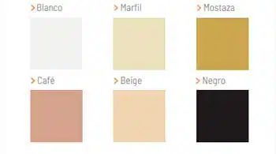
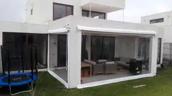
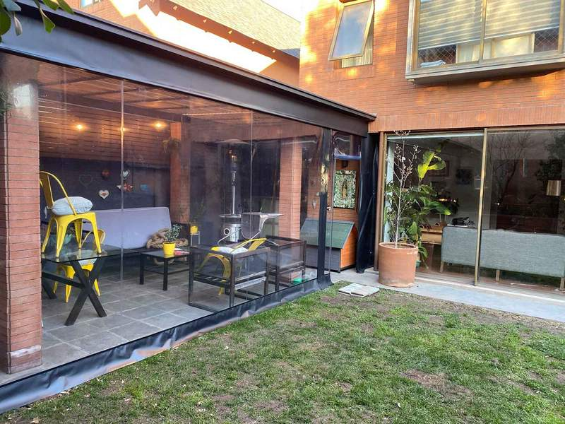
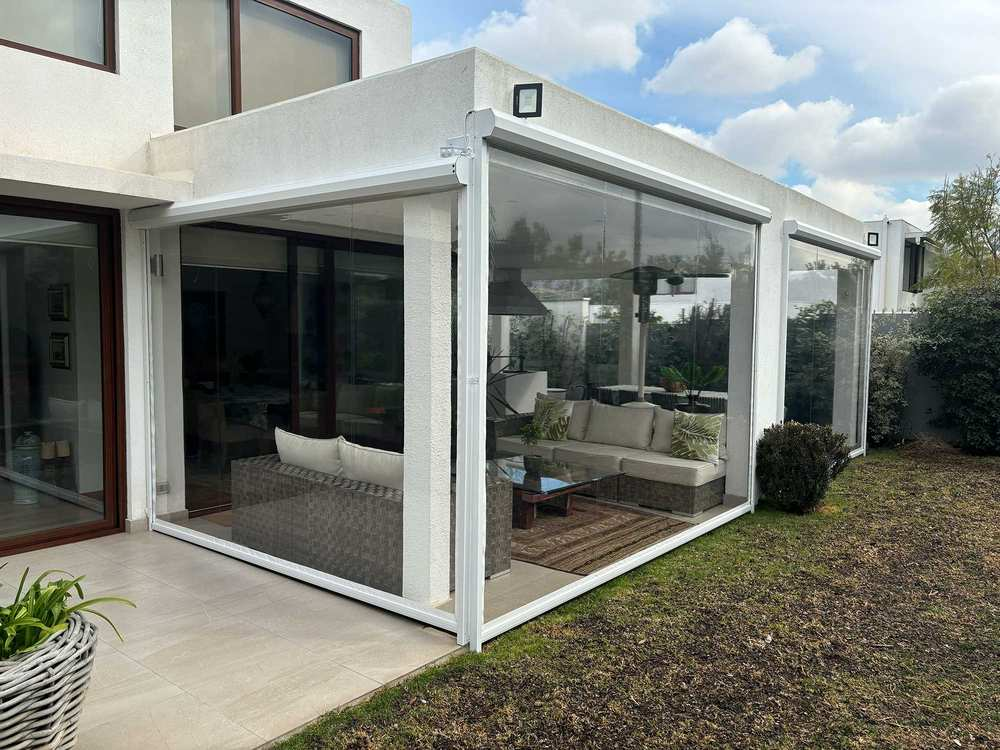
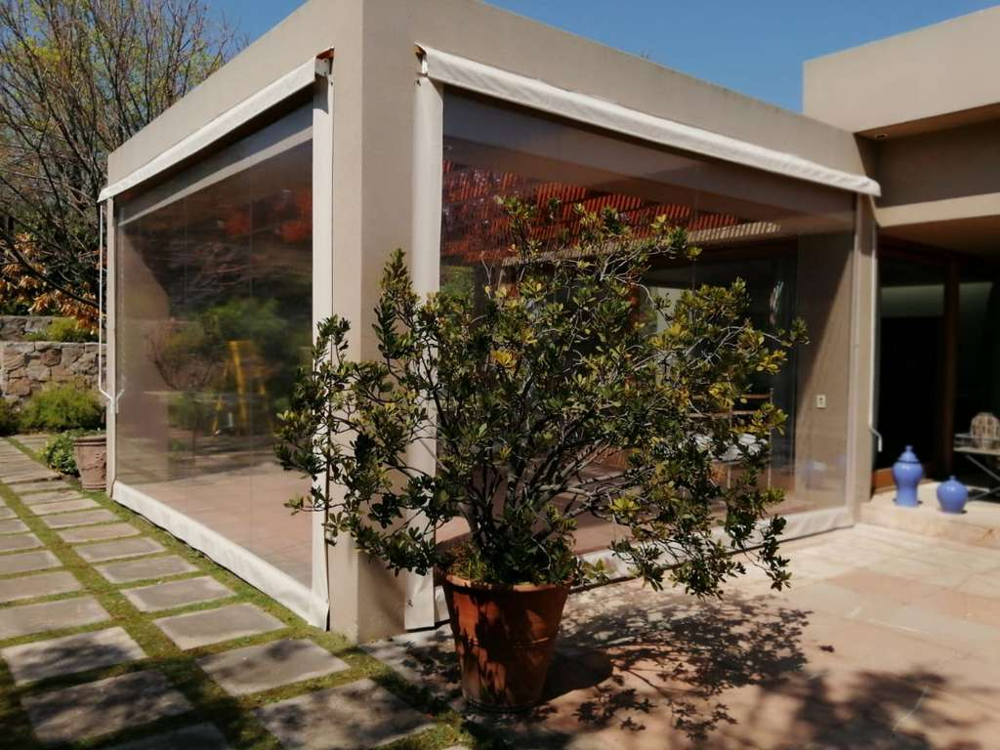
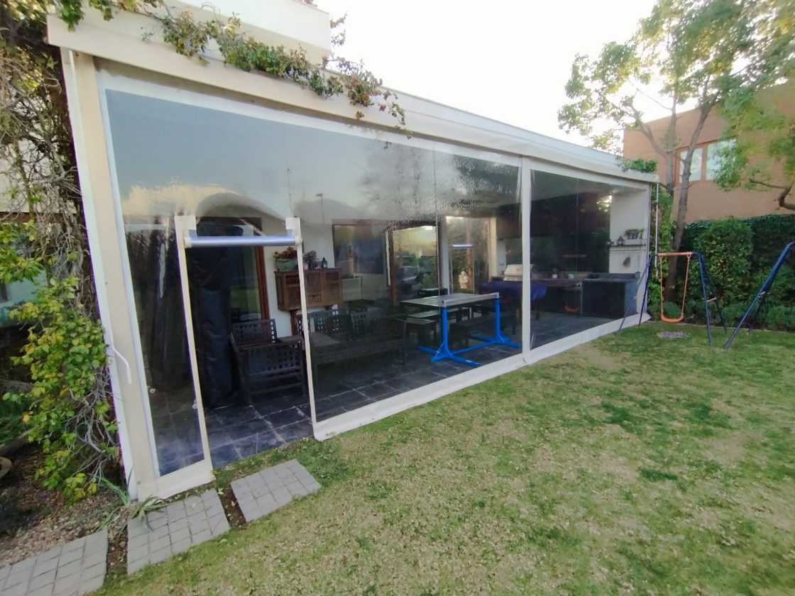

Cierre de Terraza
Protege tu terraza todo el año
Nuestros cierres de terraza en PVC te permiten disfrutar tu espacio exterior sin importar el clima. Aquí te contamos sus principales características y algunos proyectos que hemos realizado.

Resistente
Material de alta durabilidad que soporta lluvia, viento y sol.

A medida
Fabricado según las dimensiones exactas de tu terraza.

Fácil de usar
Sistema de manivela simple para abrir y cerrar cuando quieras.
Algunos de nuestros proyectos



